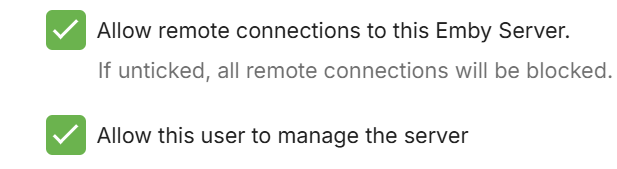

Benutzer
Die meisten Vorgänge innerhalb von Emby basieren auf Benutzern. Benutzer können ihre eigenen personalisierten Mediatheken, Benutzerdaten, Empfehlungen, Sicherheitseinstellungen und mehr haben.
Benutzer werden im Server-Dashboard verwaltet, indem Sie zu Benutzer navigieren.
Lokale Benutzer
Lokale Benutzer werden unter der Benutzerüberschrift angezeigt. Dies sind Benutzer, die Sie im Server-Dashboard erstellt haben und die privat in Ihrem persönlichen Emby Server verwaltet werden.
Der Einrichtungsassistent des Emby Servers wird einen Benutzer mit administrativem Zugriff erstellen. Dieser Bildschirm ermöglicht Administratoren das Hinzufügen, Bearbeiten und Entfernen zusätzlicher Benutzer.

Ein lokaler Benutzer wird mit einer Wolke angezeigt, wenn er mit Emby Connect verknüpft ist.

Die Verknüpfung eines Benutzers mit Emby Connect ermöglicht einen einfacheren Anmeldevorgang, der nicht die Kenntnis der IP-Adresse Ihres Servers erfordert. Weitere Informationen finden Sie unter Emby Connect.
Hinzufügen eines Benutzers
Um einen Benutzer hinzuzufügen, klicken Sie auf die + Schaltfläche innerhalb der Benutzerüberschrift:

Sie werden dann zur neuen Benutzerseite weitergeleitet. Das einzige erforderliche Feld ist ein Benutzername:
Jedem Benutzer kann administrativer Zugriff gewährt werden, was es ihm ermöglicht, das Server-Dashboard zu nutzen. Sie können auch Remote-Verbindungen zum Server auf Benutzerebene steuern.

Darüber hinaus können Sie den Zugriff auf Mediatheken und Kanäle konfigurieren, und dies kann später leicht geändert werden:
Um den Zugriff auf Benutzerfunktionen zu verwalten, beginnen Sie auf der Benutzerseite und klicken auf ein Benutzerkonto.
Funktionszugriff
Funktionen können gewährt oder verweigert werden, wie die Fähigkeit, Medien zu löschen, Medien herunterzuladen, Live-TV zu sehen, Live-TV zu verwalten usw. Die Option "Medienwiedergabe erlauben" bestimmt, ob der Benutzer Medien abspielen kann oder nicht. Diese Option ist praktisch, wenn Sie einen Benutzer einrichten möchten, der in der Bibliothek stöbern, aber nichts abspielen kann.

Sie können auch entscheiden, wie sie gemeinsam genutzte Geräte ferngesteuert steuern können. Das Fernsteuern eines anderen Benutzers ermöglicht es ihm, Inhalte zur Wiedergabe an Geräte zu senden, während ein anderer Benutzer angemeldet ist.
Das Fernsteuern gemeinsam genutzter Geräte, wie Dlna-Geräte, ermöglicht es ihnen ebenfalls, Inhalte an diese zu senden.
Zuletzt ermöglicht der erweiterte Zugriff Ihnen, einen Benutzer zu deaktivieren oder zu verbergen, sowie ihn daran zu hindern, seine Benutzereinstellungen zu ändern.
Das Deaktivieren eines Benutzers wird genau das tun. Alle bestehenden Sitzungen dieses Benutzers werden abrupt beendet. Das Verbergen eines Benutzers wird ihn einfach von visuellen Anmeldebildschirmen entfernen. Sie müssen ihren Benutzernamen und ihr Passwort manuell eingeben.
Das Deaktivieren des Zugriffs auf Benutzereinstellungen wird einem Benutzer verhindern, seine Profil-Einstellungen zu ändern, wie z.B. Ihr Bild, Passwort, Anzeigepräferenzen, Spracheinstellungen und mehr. Dies ist nützlich für Administratoren, die es bevorzugen, diese Bedingungen ihren Benutzern vorzugeben.
Inhaltszugriff
Siehe Inhaltszugriff.
Gerätezugriff
Siehe Gerätezugriff.
Kindersicherung
Siehe Kindersicherung.
Benutzerpasswort
Siehe Passwörter.
Löschen eines Benutzers
Um einen Benutzer zu löschen, klicken Sie einfach auf die Punktmenü-Schaltfläche und wählen Sie Löschen: